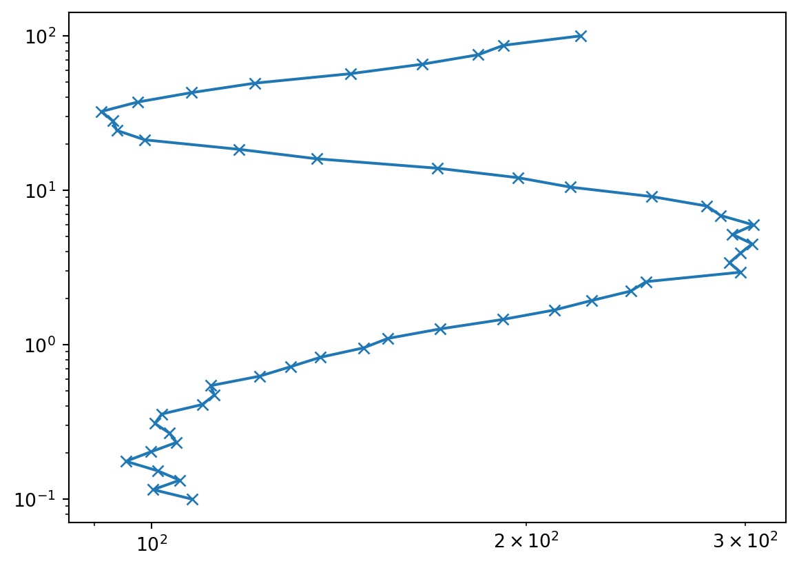
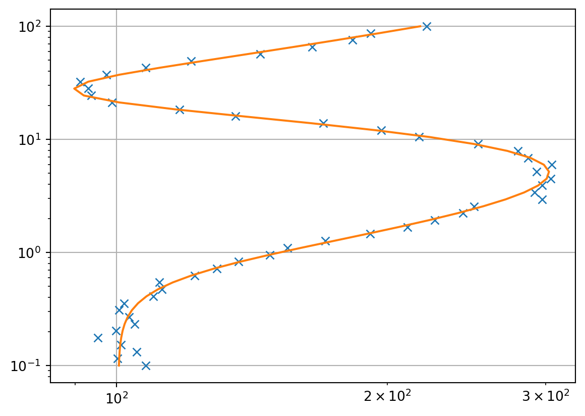
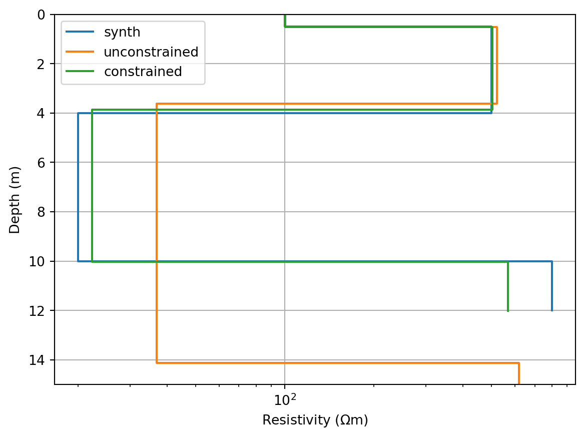

import numpy as np
import matplotlib.pyplot as plt
import pygimli as pg
from pygimli.frameworks.lsqrinversion import LSQRInversion
from pygimli.physics.ert import VESModellingPotential Theory
This is a Quarto book.
nlay = 4
lam = 200.0
errPerc = 3.0
ab2 = np.logspace(-1, 2, 50)
mn2 = ab2 / 3.0
f = VESModelling(ab2=ab2, mn2=mn2, nLayers=nlay)
synres = [100., 500., 20., 800.] # synthetic resistivity
synthk = [0.5, 3.5, 6.] # synthetic thickness (nlay-th layer is infinite)
rhoa = f(synthk+synres)
rhoa = rhoa * (pg.randn(len(rhoa)) * errPerc / 100. + 1.)
pg.plt.loglog(rhoa, ab2, "x-");
tLog = pg.trans.TransLog()
inv = LSQRInversion(fop=f, verbose=False)
inv.LSQRiter = 20
# inv = pg.Inversion(fop=f)
inv.dataTrans = tLog
inv.modelTrans = tLog
startModel = pg.cat(pg.Vector(nlay-1, 8), pg.Vector(nlay, pg.median(rhoa)))
inv.inv.setMarquardtScheme()
model1 = inv.run(rhoa, pg.Vector(len(rhoa), errPerc/100), lam=1000, startModel=startModel)
print(model1)
print(inv.chi2(), inv.relrms(), pg.sum(inv.model[:nlay-1]))
G = pg.Matrix(rows=1, cols=len(startModel))
for i in range(3):
G.setVal(0, i, 1)
c = pg.Vector(1, pg.sum(synthk))
inv.setParameterConstraints(G, c, 100)
model2 = inv.run(rhoa, pg.Vector(len(rhoa), errPerc/100), lam=1000, startModel=startModel)
print(model2)
print(inv.chi2(), inv.relrms(), pg.sum(inv.model[:nlay-1]))23/08/23 - 13:09:13 - pyGIMLi - WARNING - Multiprocess Jacobian currently unavailable for Win32 and Mac.
23/08/23 - 13:09:13 - pyGIMLi - WARNING - Multiprocess Jacobian currently unavailable for Win32 and Mac.
23/08/23 - 13:09:13 - pyGIMLi - WARNING - Multiprocess Jacobian currently unavailable for Win32 and Mac.
23/08/23 - 13:09:13 - pyGIMLi - WARNING - Multiprocess Jacobian currently unavailable for Win32 and Mac.
23/08/23 - 13:09:13 - pyGIMLi - WARNING - Multiprocess Jacobian currently unavailable for Win32 and Mac.
23/08/23 - 13:09:13 - pyGIMLi - WARNING - Multiprocess Jacobian currently unavailable for Win32 and Mac.
23/08/23 - 13:09:13 - pyGIMLi - WARNING - Multiprocess Jacobian currently unavailable for Win32 and Mac.
23/08/23 - 13:09:14 - pyGIMLi - WARNING - Multiprocess Jacobian currently unavailable for Win32 and Mac.
23/08/23 - 13:09:14 - pyGIMLi - WARNING - Multiprocess Jacobian currently unavailable for Win32 and Mac.
23/08/23 - 13:09:14 - pyGIMLi - WARNING - Multiprocess Jacobian currently unavailable for Win32 and Mac.
23/08/23 - 13:09:14 - pyGIMLi - WARNING - Multiprocess Jacobian currently unavailable for Win32 and Mac.
23/08/23 - 13:09:14 - pyGIMLi - WARNING - Multiprocess Jacobian currently unavailable for Win32 and Mac.
23/08/23 - 13:09:14 - pyGIMLi - WARNING - Multiprocess Jacobian currently unavailable for Win32 and Mac.
23/08/23 - 13:09:14 - pyGIMLi - WARNING - Multiprocess Jacobian currently unavailable for Win32 and Mac.
23/08/23 - 13:09:14 - pyGIMLi - WARNING - Multiprocess Jacobian currently unavailable for Win32 and Mac.
23/08/23 - 13:09:14 - pyGIMLi - WARNING - Multiprocess Jacobian currently unavailable for Win32 and Mac.
23/08/23 - 13:09:14 - pyGIMLi - WARNING - Multiprocess Jacobian currently unavailable for Win32 and Mac.
23/08/23 - 13:09:15 - pyGIMLi - WARNING - Multiprocess Jacobian currently unavailable for Win32 and Mac.
7 [0.4937320819915976, 3.370781257178004, 11.863253437946202, 100.244873681884, 492.5077484604116, 37.28200242608787, 1045.9704195687327]
0.9116070650973334 2.8871842012948012 15.727766777115804
7 [0.48251903575283134, 3.774936430815615, 5.819316774128112, 100.07046215540682, 462.4530830287375, 18.878951248500222, 894.798506720426]
0.9810996731541719 2.9790719041838205 10.07677224069656fig, ax = pg.plt.subplots()
ax.loglog(rhoa, ab2, "x")
ax.loglog(inv.response, ab2, "-")
ax.grid(True)
fig, ax = pg.plt.subplots()
pg.viewer.mpl.drawModel1D(ax, synthk, synres, plot="semilogx", label="synth")
pg.viewer.mpl.drawModel1D(ax, model=model1, label="unconstrained")
pg.viewer.mpl.drawModel1D(ax, model=model2, label="constrained")
ax.set_ylim(15, 0)
ax.grid(True)
ax.legend();